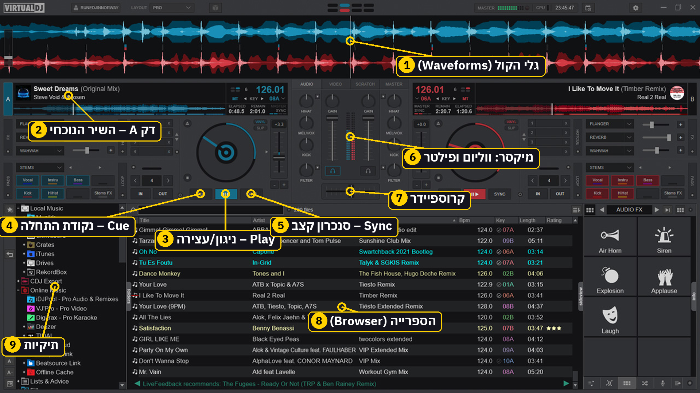

קורס בעברית · Mac · עכבר ומקלדת
לומדים VirtualDJ מאפס
מתחילים בלי פלטה. 28 שיעורים ב-5 פרקים, עם הדגמות אינטראקטיביות, תרגיל ובוחן בכל שיעור.
התחל ללמוד ←28שיעורים
5פרקים
56דקות קריאה (בערך)
84שאלות בוחן
0%הושלם
זמן הקריאה מחושב לפי כ-150 מילים לדקה, בלי זמן התרגול. מומלץ להוסיף 15–20 דקות תרגול לכל שיעור.
📚קרא את השיעור
🎛️שחק בהדגמה
🎯עשה את התרגיל
📝בדוק את עצמך

פרק 1: מתחילים
4 שיעורים · כ-8 דק' קריאה
פרק 2: יסודות
6 שיעורים · כ-12 דק' קריאה
פרק 3: מיקסים
6 שיעורים · כ-12 דק' קריאה
פרק 4: יצירתיות
6 שיעורים · כ-12 דק' קריאה
פרק 5: תרגול ושטח
6 שיעורים · כ-12 דק' קריאה
ההתקדמות נשמרת בדפדפן שלך במחשב הזה.